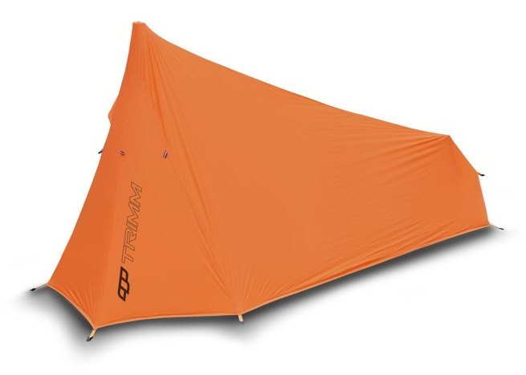

PACK DSL

1 os.0,85 kg12 × 12 × 25 cm
VNĚJŠÍ STAN100 % Nylon Ultralite Ripstop, Siliconized, Taped seams, 4 000 mm H₂O
VNITŘNÍ STAN100 % Nylon Ultralite, Mesh, Water repelent
PODLAHA100 % Nylon Ultralite Ripstop PU 4 000 mm H₂O
KONSTRUKCEDural 7001 T6 8.5 mm + Eloxed dural parts
ROZMĚR210 x (80+60)/110 cm
KOLÍKYAnodized hardened aluminium
Revoluční jednolůžkový stan s využitím trekingové hole s prostornou apsidou a širokým vchodem. Jedná se o jeden z nejlehčích modelů na outdoorovém trhu. Je vyrobený z maximálně odlehčených a přitom velmi odolných materiálů. Při plném využití kotevních šnůr je i dobře stabilní.
VLASTNOSTI
- Dostupná přídavná podlážka
- Konstrukce s využitím trekových hůlek
- Lepené švy
- Odkládací síťka
- Opravná sada
- Předsíňka pro vaření a skladování
- Reflexní prvky
- Samonosná moskytiéra
- Úložné kapsy
- Variabilní otevírání dveří
- Větrání
- Vodoodpudivé zipy
- Ultralehký stan, minimální rozměr ve sbaleném stavu
1
orange/grey